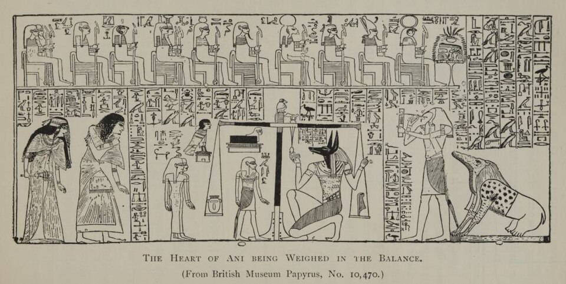

Зал Двух Истин
Умершего ведёт в Зал Двух Истин (егип. mât mât) шакалоголовый Анубис. Там заседает суд: на престоле — Осирис, судья загробного мира, рядом — Маат, богиня истины с пером в руке. На весах две чаши: в одной перо Маат, в другой сердце умершего, иб. Сердце — средоточие разума и памяти, единственный орган, оставшийся в мумии: всё остальное ушло в канопы, а иб осталось в теле.
Отрицательная исповедь
Прежде чем весы качнулись, умерший должен говорить — и это его жизнь, предъявленная суду. Обращаясь к 42 богам-судьям — числом равным номам, округам Египта, — он читает «отрицательную исповедь»: «Не убил я, не украл, не заставил плакать, не уменьшал хлебов в храмах… Я принёс правду, я отогнал ложь». И — как клятву, четырежды: «Я чист, я чист, я чист, я чист».
Вердикт
Затем Тот и Анубис кладут сердце на весы, а Тот записывает результат. Если чаши уравновесились, умерший становится маа-херу — «оправданным», «правогласным»: его имя вписывают в список праведников, и Анубис вводит его к Осирису, отводящему оправданного на поля Иалу. Но если сердце перевешивало — если грех тяжелее пера, — у весов поджидала Амат: голова крокодила, тело льва, задние лапы бегемота. Амат сжиравала сердце — это и есть «вторая смерть»: полное уничтожение, небытие, которое уже не обратить вспять.
Глава 125 Книги мёртвых
Сцена — самая знаменитая в погребальной литературе Египта: Книга мёртвых, глава 125, «Взвешивание сердца», известна с эпохи Хатшепсут и Тутмоса III (ок. 1475 г. до н. э.) и позже. Красивейший вариант — на папирусе писца Ани (ок. 1250 г. до н. э., Британский музей, почти 24 метра): мёртвый Ани перед весами, Тот записывает, у весов сидит Амат. Здесь решают не род и достаток, а то, как человек жил.
Скарабей-сердечник 30B
Сердце — самый опасный свидетель: в суде оно могло «выступить против господина», исповедуясь в грехах покойного. Поэтому на грудь мумии клали скарабея — сердечник — с гравировкой заклинания 30B: «не свидетельствуй против господина твоего перед владыкой всего сущего». По заголовку заклинание было «обнаружено» принцем Джедефхором во времена Микерина — за много столетий до папируса Ани. Сердечник — не украшение, а правовой документ: защита от самого грозного свидетеля.